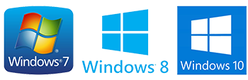
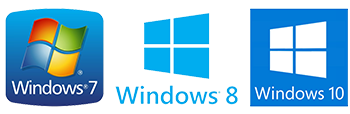

Компьютерная помощь по удаленке
Специалист по компьютерам:
-
Поможет переустановить Windows
-
Настроит Операционную систему
-
Удалит вирусы
-
Ускорит работу компьютера
-
Почистит компьютер через программу ANYDESK
-
Не нужно искать Мастера
-
Не придется переплачивать за вызов
-
Полный контроль и наблюдение за происходящим на экране
-
Связь со специалистом на прямую во время работ
-
Консультация
-
и разное другое ...

 



О сервисе
Что делать, если понадобилась помощь специалиста, а бегать по городу в поисках мастерских нет ни времени, ни желания?
Воспользуйтесь помощью специалиста, используя интернет.
Это новшество набирает обороты в интернете с каждым годом.
Данный сервис создан - для помощи при возникающих затруднениях разного рода на вашем компьютере или ноутбуке
Такая помощь удобна, понятна и что самое главное, вы наглядно видите, что делает специалист, в режиме "онлайн" получаете ответ на любой интересующий вас вопрос и практическую помощь
Как это работает
Главное условие - наличие стабильного интернета!
Нажмите "Обратиться за помощью" - Опишите вашу проблему отправьте сообщение удобным для Вас способом (см. "КОНТАКТЫ").
После уточнений, дальнейшие взаимодействия происходят через программу ANYDESK, скачать её Вы сможете сами с Официального сайта или по ссылке, в разделе "ИНСТРУМЕНТЫ"
Установите программу и сообщите нам цифровой ID (Это рабочее место)
После - дождаться и нажать зеленую кнопку ПРИНЯТЬ в появившемся окне.
Часы работы
Ориентируйтесь на логотип вверху сайта.
В дни когда специалист занят - высвечивается НЕДОСТУПЕН В рабочие дни высвечивается ONLINE.
Трудиться приходится каждый день включая выходные и праздники начало рабочего дня с 10-00 по Москве и до позднего вечера До 00-00 МСК.
Оплата
Оплата производится всегда после выполнения работ
Если в результате работ проблема не решена - оплата не взымается
| Простое минимальное действие исправляющее ситуацию | 200 руб (3$) |
| Действия исправляющие ситуацию за короткий срок | 500 руб(7$) |
| Переустановка Операционной системы | 1250 руб (15$) |
| Остальные работы = по договоренности | |
Варианты оплаты на выбор: По Карте, Qiwi, WebMoney, Иногда просто на баланс предоставляемого телефонного номера
Инструменты
Для дистанционной помощи необходимы соответсвующие инструменты:
1. Программа Anydesk. Программу достаточно скачать и запустить, будет сгенерирован уникальный ID номер в разделе - "ЭТО РАБОЧЕЕ МЕСТО".
Данный ID сообщается Специалисту для соединения. ссылка
2. Программа Rufus - для создания загрузочных флэшек из Образа (ISO). В некоторых случаях необходимо воспользоваться загрузочной флэшкой, как раз Rufus нам и поможет. ссылка
3.Образ для загрузочной Флэшки (ISO файл) - диск для Rufus от Сергея Стрельца. Это комплекс из урезанной версии Windows с программами помощи - которую достаточно записать и загрузить с флэшки. ссылка
*Если вы владете компьютером или ноутбуком - ЗАГРУЗОЧНАЯ ФЛЭШКА становится ОБЯЗАТЕЛЬНЫМ ! атрибутом в доме, в случае выхода компьютерной техники из строя.
4. Оригинальный образ Windows от Майкрософт. Требуется для переустановки Windows
Windows 10 Pro (64 разрядная) СКАЧАТЬ
Windows 7 Максимальная (64 разрядная) СКАЧАТЬ
Windows 7 Максимальная (32 разрядная) СКАЧАТЬ
Видео
Контакты
Вы можете всегда связаться в рабочие часы через любой удобный для Вас мэссенджер (иконка внизу страницы) если статус Специалиста ONLINE или оставить свое сообщение. При первой возможности Вам ответят.